The steps in this lesson are for use with Visual Studio 2003.
1. Open the Data section of your toolbox and drag an OleDbDataAdapter onto your form. This will open the Data Adapter Configuration Wizard.
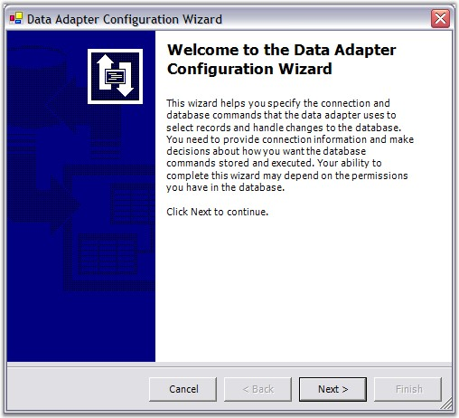
Figure 7: Data Adapter Configuration Wizard
2. You can use this wizard to create a connection to the NWIND.mdb file. Click Next to continue.
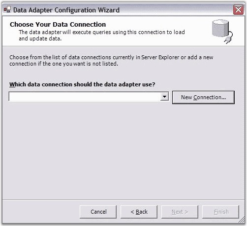
Figure 8: Setting up the Data Connection
3. Click New Connection. The Data Link Properties dialog box will be displayed. In the Provider tab, select Microsoft Jet 4.0 OLE DB Provider option as shown in the following screen shot.
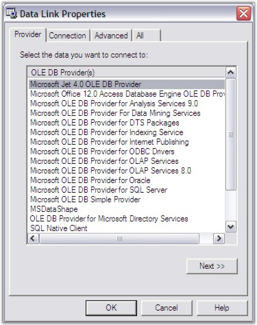
Figure 9: Choose the Access Data Provider, Jet 4.0
4. Click Next. The Connection tab will be displayed as follows.
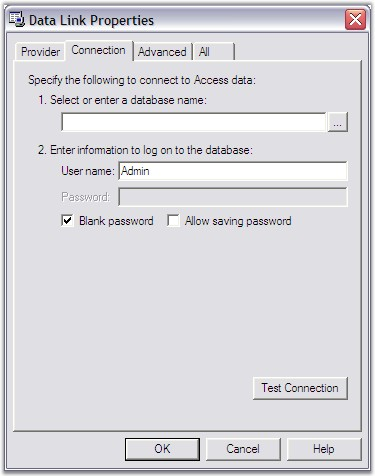
Figure 10: Click the Browse button to select the File
5. Click the Browse button to browse and locate an mdb file. For example, 'NWIND.mdb' is selected. This file is found in the following path: C:\Syncfusion\EssentialStudio\[Version Number]\Windows\Data (this path will vary according to your installation location). Then click OK.
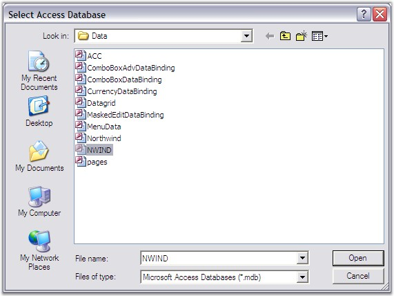
Figure 11: Locating the Access file, NWIND.MDB
6. Click Next.
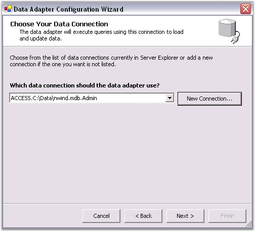
Figure 12: Setting the MDB file as the Data Connection
7. Select Use SQL statements as your query type, and then click Next.
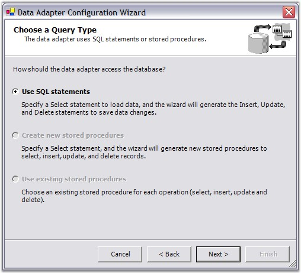
Figure 13: Select to Use SQL Statements
8. To generate the SQL statement, click Query Builder.
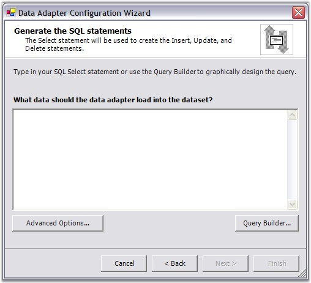
Figure 14: Select the Query Builder
9. In the Add Table dialog box, select the 'Suppliers' table, click Add, and then click Close.
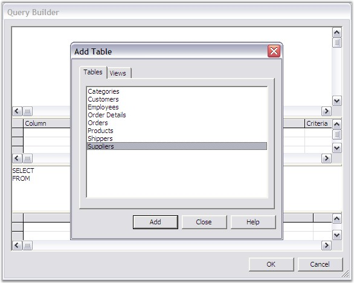
Figure 15: Select the Suppliers Table
10. In this Query Builder window, select All Columns. Then click OK.
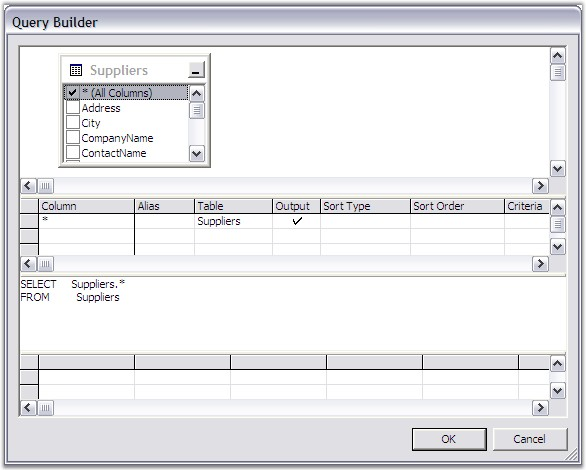
Figure 16: Select the Fields for your Query
11. Click Next to confirm the Query that you have selected.
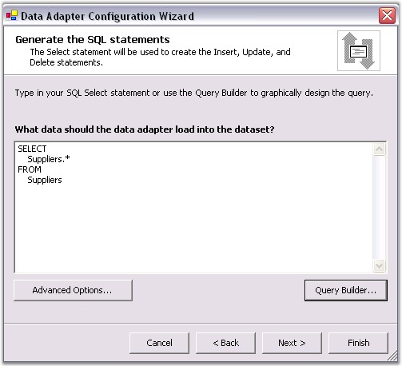
Figure 17: Confirm the Query
12. Click Finish. Your design surface will look similar to this.
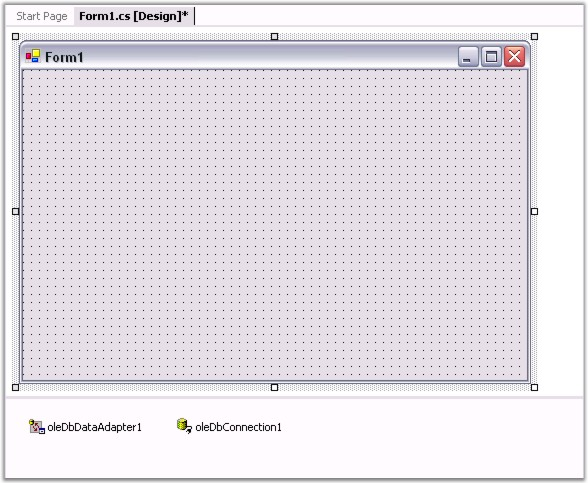
Figure 18: Adapter and Connection
13. Next you will need to generate a data set from the OleDbDataAdapter. Right-click the oleDbDataAdapter1 under the design surface and select Generate DataSet. The Generate Dataset dialog box will be displayed.
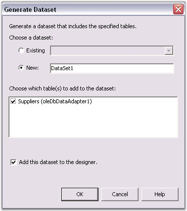
Figure 19: Generating a Dataset
14. Click OK to add a DataSet11 object next to the oleDbConnection1 under the design surface.
15. From the toolbox, drag the Grid Grouping control to your form. Size and position it. Also, set the DataSource property to dataSet11.Suppliers Data Table as shown in the following screen shot.
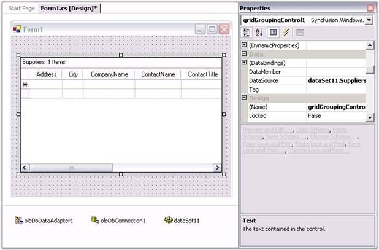
Figure 20: Designer with Grid Grouping control and setting the DataSource Property
16. Double-click the form on the design surface to add a Load event handler. In this handler, add the following code.
|
[C#]
this.oleDbDataAdapter.Fill(this.dataSet11); |
|
[VB.NET]
Me.oleDbDataAdapter.Fill(Me.dataSet11) |
The preceding code is used to load the data from the Data Table. Without this code, you will see an empty Grid Grouping control at run time.
17. Finally, set the Anchor property of the Grid Grouping control to All, so that the Grid Grouping control can be easily sized with the form. This is depicted in the following screen shot.
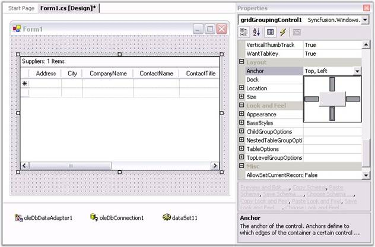
Figure 21: Setting the Anchor Property
18. To allow grouping at run time, the Grid Grouping control displays a drop panel onto which the user can drag columns to be grouped. To display this drop panel, you need to set the ShowGroupDropArea property to true as shown in the following screen shot.
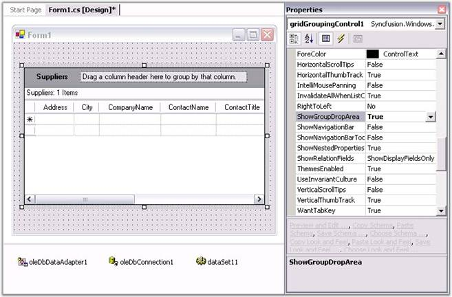
Figure 22: Adding the Group Drop Area
Run the project. You will see the basic Grid Grouping control with the data as follows.
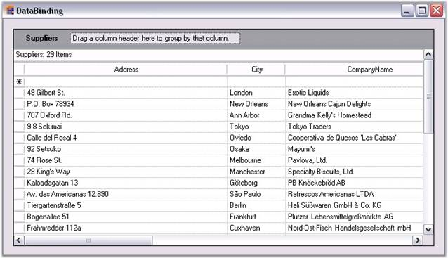
Figure 23: Application showing Grid Grouping control with Data
19. To group by CompanyName, click on the CompanyName column header and drag it to the drop area as illustrated in the following screen shot.
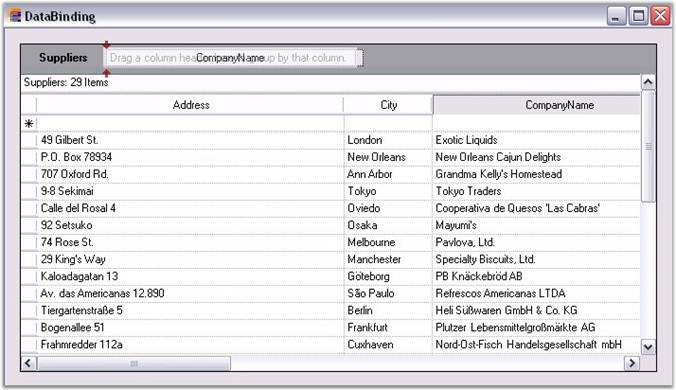
Figure 24: Grouping by the CompanyName Column
Note: Each set of grouped values has its own "Caption" row and its own "AddNew" row (*). Each group has its own PlusMinus cell that will let you expand/collapse the group.
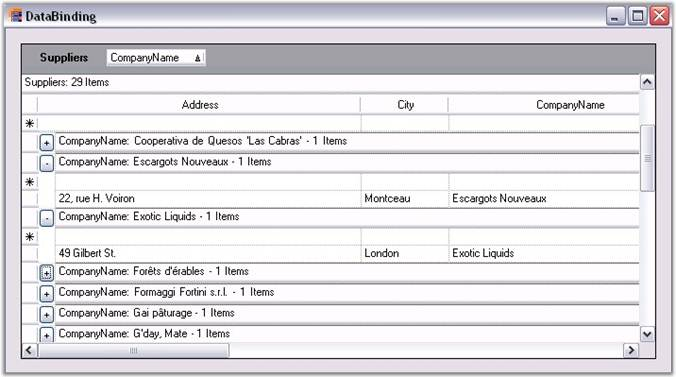
Figure 25: Grouped Grid